SocialSphere
Designed and developed Social Sphere, an Apple Vision Pro app for the UM online Masters in Social Work degree, simulating an interactive child and family welfare inspection and a student discussion activity within a virtual UM social work building.
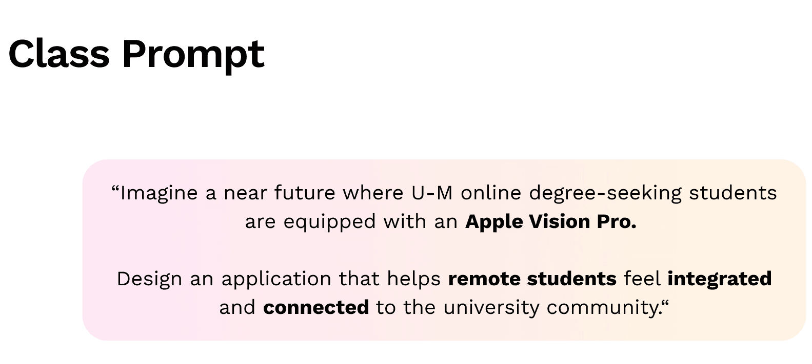
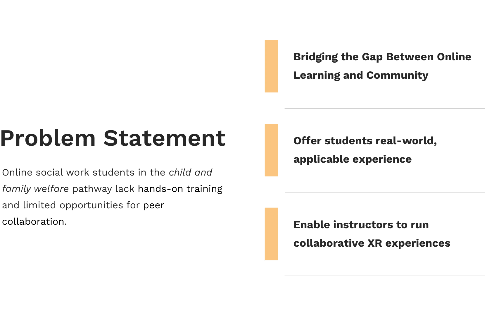
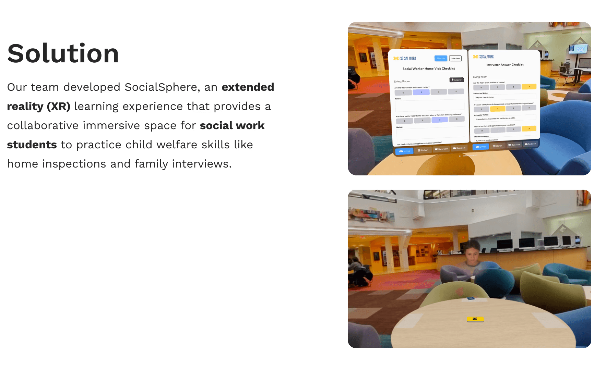
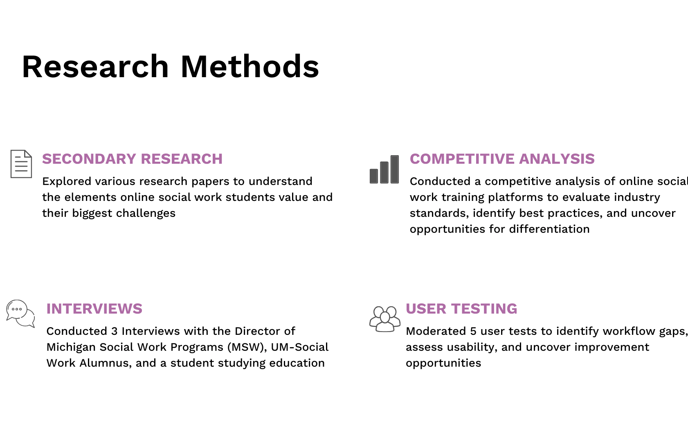
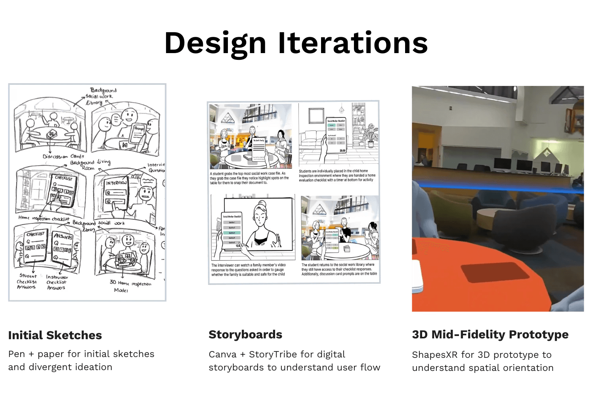
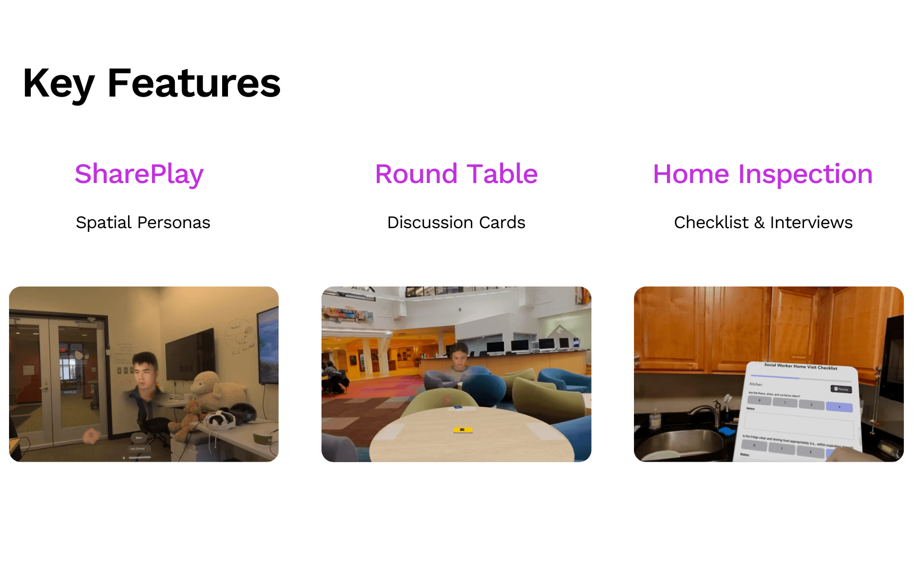
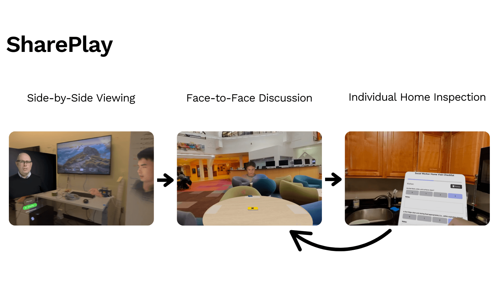
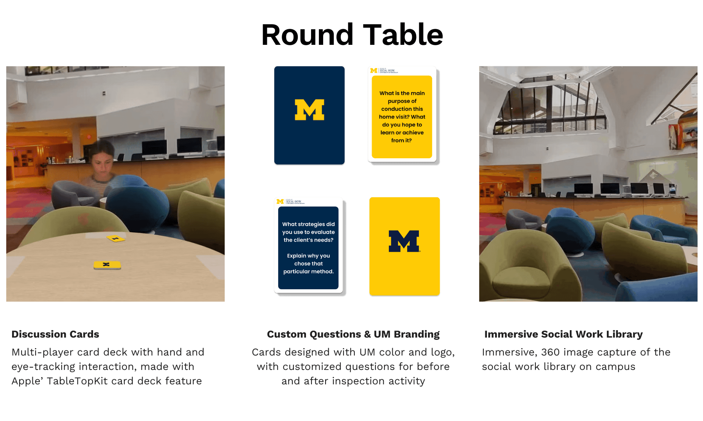
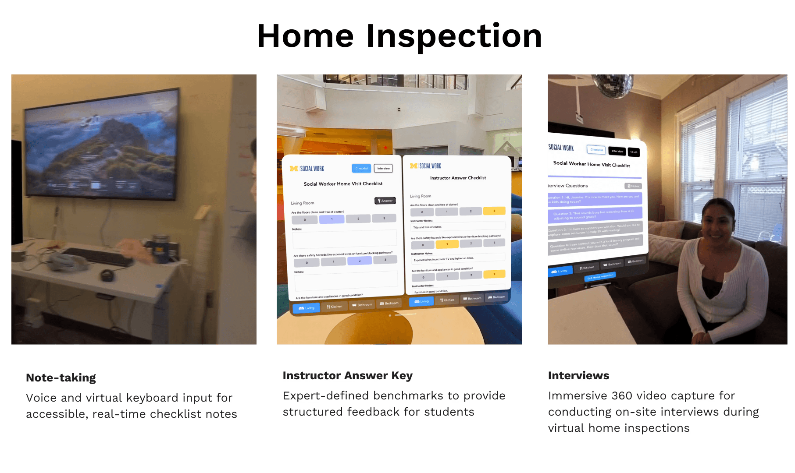
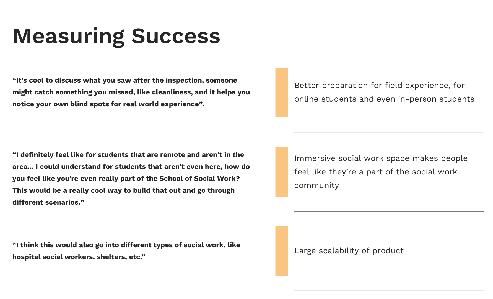
Video Demo
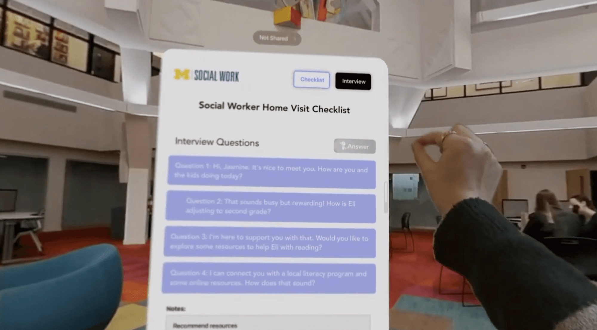